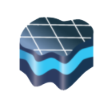

Visual MODFLOW Flex
Groundwater Flow & Contaminant Transport Modeling Software
Visual MODFLOW Flex brings together industry-standard codes for groundwater flow and contaminant transport, essential analysis and calibration tools, and stunning 3D visualization capabilities in a single environment.
What’s New in Visual MODFLOW Flex 11.0
Experience the new version release of Visual MODFLOW Flex 11.0. For a complete version history, see the Visual MODFLOW Flex readme file.
Model Import
- Import data from a wide range of sources and formats
- Automatic coordinate system and units conversion
- Intelligent error checking and data validation
Boundary Condition & Properties
- Define model boundaries, property zones, and attributes from GIS data
- Flexible grid options for various geologic conditions
- Support for structured and unstructured grid types
Data Operations
- Import TINs from point shapefiles (.shp) and from Triangle .node or .ele files
- Generate TINs from existing point data objects, using linear or kriging interpolation schemes
- Recharge and Evapotranspiration boundary conditions as shapefiles
- Surfaces and TINs as point shapefiles
Performance & Usability
- Improved simulation accuracy and model stability
- Faster runtimes and enhanced hardware rendering
- Parallel scenario management and comparison
Applications
- Delineate well capture zones for domestic water supply development
- Design and optimize pumping well locations for mine dewatering projects
- Determine contaminant fate and exposure pathways for risk assessment
- Simulate surface water-groundwater interactions
- Watershed scale/regional groundwater modeling, and aquifer storage and recovery (ASR)
- Evaluate groundwater remediation systems (pump and treat, funnel and gate, etc.)
- Evaluate saltwater intrusion
Why Choose Visual MODFLOW Flex?
Intuitive Workflow-Driven UI
- Update model inputs and grid design at any stage
- See current, completed, and pending steps at a glance
- Integrated GIS-based 3D conceptual and numerical modeling
Powerful 3D Visualization
- Visualize all data in 2D, 3D, and multi-view displays
- Create cut-away and cross-sectional views
- Generate 3D animations and movies for reports or the web
Efficient Multi-Model Management
- Manage multiple model scenarios in a single project
- Direct visual and numerical comparisons between scenarios
- Calculate head differences and analyze uncertainty
Full GIS Integration
- Quick and easy data importing of all common file types
- Automatic coordinate system and units conversion
- Define boundaries and attributes from imported GIS data
Integrated 3D Conceptual & Numerical Modeling
- Define complex geology and model layers using borehole log data
- Interpret GIS data to define hydrogeologic properties and boundaries
- Run, analyze, and validate model results in 2D, 3D, and cross-section views
Flexible Grid Options
- Choose from various structured and unstructured grid types
- Perform grid refinement around areas of interest
- Create faster, more stable models with nested child grids
Supported Packages, Engines & File Types
MODFLOW Engines and Utilities
| Engine/Utility |
Description |
| MODFLOW-2000, 2005, NWT | Worldwide standard for simulating groundwater flow. |
| MODFLOW-6 | The updated core version of MODFLOW – supports structured and unstructured grids, flow and transport modeling. |
| MODFLOW-USG | Control volume Finite Difference version of MODFLOW that uses unstructured grids. |
| MODFLOW-LGR | Shared-node local grid refinement (LGR) for regional-local scale simulations. |
| MODFLOW-SURFACT* | Enhanced simulations of complex saturated/unsaturated subsurface flow and transport processes. |
| MODPATH | Standard utility for forward and reverse particle tracking. |
| MOD-PATH3DU** | Advanced utility for forward and reverse particle tracking. |
| Zone Budget | Standard package for sub-regional water budget calculations. |
* MODFLOW-SURFACT is a proprietary version of MODFLOW, developed by HydroGeoLogic, Inc. (HGL). A demo version is included; full version available as an add-on.
** MOD-PATH3DU is distributed separately and available for download by registering at the MOD-PATH3DU website.
MODFLOW Packages
Groundwater Flow Packages
- BAS – Basic Package
- DIS – Discretization Package for structured grids
- DISU – Discretization Package for unstructured grids (MODFLOW-USG)
- DISV – Discretization by Vertices Package for unstructured grids (MODFLOW-6)
- BCF – Block Centered Flow Package
- LPF – Layer Property Flow Package
- HUF – Hydrogeologic Unit Flow Package
- UPW – Upstream Weighting Flow Package
- NPF – Node Property Flow Package
- STO – Storage Package
- IC – Initial Conditions Package
Boundary Condition Packages*
- RIV – River package
- CHD – Constant-Head boundary package
- DRN – Drain package
- WEL – Well package
- LAK – Lake Package
- EVT – Evapotranspiration package
- SFR – Streamflow-Routing Package
- RCH – Recharge package
- FHB – Flow and Head boundary package
- MNW1/2 – Multinode Well Package
- HFB – Horizontal Flow Barrier Package
- UZF – Unsaturated Zone Flow Package
- RSF** – Recharge Seepage Face package
- TMP** – Time-Varying Material Properties package
Solver Packages*
- GMG – Geometric Multigrid Solver
- NWT – Newton-Raphson Solver
- PCG – Pre-conditioned Conjugate Gradient Solver
- SAMG – Algebraic Multi-Grid Solver
- SIP – Strongly Implicit Solver
- WHS – Waterloo Hydrogeologic Solver (Bi-CGSTAB)
- SMS – Sparse Matrix solver for MODFLOW-USG
- IMS – Iterative Matrix Solution for MODFLOW-6
* Not all packages/solvers are available with every groundwater flow engine. See the documentation for details.
** MODFLOW-SURFACT only.
Transport Engines
- MT3DMS – Standard simulation of multi-species solute transport
- MODFLOW-6 – Integrated transport modeling
- MODFLOW-SURFACT* – Enhanced simulations of complex saturated/unsaturated subsurface flow and transport
- SEAWAT – Variable-density groundwater flow coupled with multi-species solute and heat transport
- RT3D – Advanced and specialized multi-species reactive solute transport simulations
Parameter Estimation & Sensitivity Analysis
- PEST – Automated parameter estimation, calibration and sensitivity analysis, with support for pilot points, regularization, and advanced kriging.
Grid Types
- Structured Finite Difference Grids: Domain divided into layers, rows, and columns. Supports deformed, uniform, and semi-uniform vertical discretization.
- Unstructured Control Volume Finite Difference Grids: Includes QuadTree (Q-grid) and Voronoi (V-grid) for local refinement and complex geometries.
Supported File Types
- Spatial/Vector Data: Points (.XLS, .XLSX, .TXT, .CSV, .MDB, .SHP, .DXF, .TRP), Polylines (.SHP, .DXF), Polygons (.SHP, .DXF)
- Raster Data: 3D Surfaces (.GRD, .ASC), 3D Gridded Data (.HDS, .UCN, .DAT), Images (.BMP, .TIF, .JPG, .DXF)
- Time Schedules: Tabulated data (.XLS, .XLSX, .TXT, .CSV, .MDB)
- Cross-Sections: Hydro GeoAnalyst (HGA) Cross Sections (.3XS)
- Vertical and Non-vertical Wells: Tabulated Data (.XLSX, .CSV)
Get Started With Visual MODFLOW Flex
Ready to experience the power of Visual MODFLOW Flex? Download a free trial or contact us for more information.